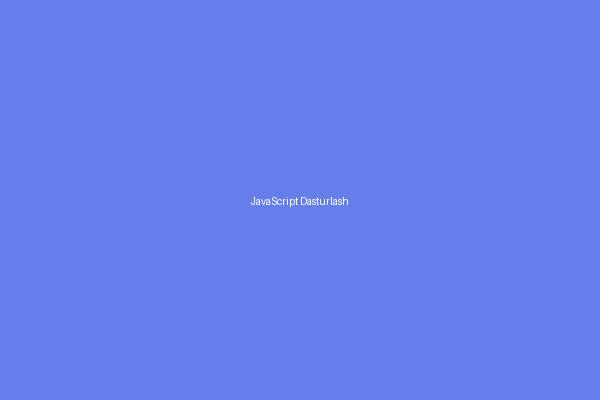

Dasturlash Darslarining Batafsil Tavsifi
Bu sahifada siz har bir dars haqida ko'proq ma'lumot olishingiz mumkin. Har bir dars turli mavzularni o'z ichiga oladi va amaliy topshiriqlar mavjud.
Bu sahifada siz har bir dars haqida ko'proq ma'lumot olishingiz mumkin. Har bir dars turli mavzularni o'z ichiga oladi va amaliy topshiriqlar mavjud.
HTML (HyperText Markup Language) - veb-sahifalarning tuzilishini yaratish uchun ishlatiladigan belgilash tilidir. U semantic tuzilma ta'minlaydi va SEO uchun muhim rol o'ynaydi.
Har bir HTML sahifasi quyidagi asosiy tuzilmaga ega bo'ladi:
| Teg Nomi | Tavsifi | Misol | Atributi | |
|---|---|---|---|---|
| <h1> - <h6> | Sarlavhalar | <h1>Bosh Sarlavha</h1> | id, class, style | |
| <p> | Paragraf | <p>Matn</p> | ||
| <a> | Havolalar | <a href="url">Havola</a> | href, target, title | |
| <img> | Rasmlar | <img src="rasm.jpg" alt="tavsif"> | src, alt, width, height | |
| <form> | Shakllar | <form method="post">...</form> | action, method, enctype | |
CSS (Cascading Style Sheets) - veb-sahifalarni bezash va uslubini boshqarish uchun ishlatiladigan til. Bu HTML tuzilmasiga rang, o'lcham va pozitsiyani beradi.
CSS-da turli selektor turlari mavjud:
Barcha element turlarini tanlash:
p { color: blue; }
Class atributi bilan elementlarni tanlash:
.my-class { color: red; }
ID atributi bilan elementlarni tanlash:
#my-id { color: green; }
Atributi bilan elementlarni tanlash:
input[type="text"] { border: 1px solid blue; }
Elemento'z xususiy holatini tanlash:
a:hover { color: purple; }
Murakkab selektorlar:
div > p { margin: 10px; }
JavaScript - veb-sahifalarni interaktiv qilish uchun ishlatiladigan dasturlash tili. U klient-tomonida ishlaydi va foydalanuvchi bilan o'zaro aloqa o'rnatadi.
